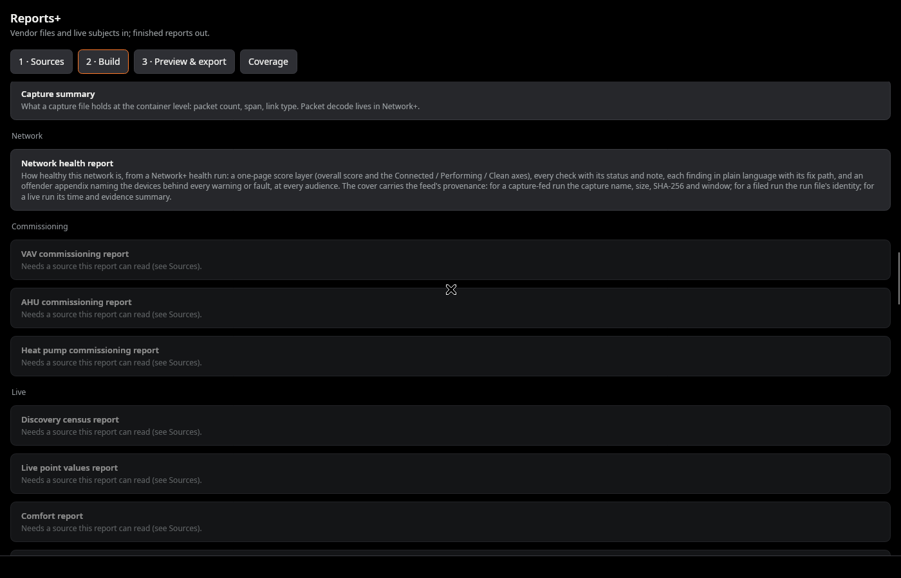
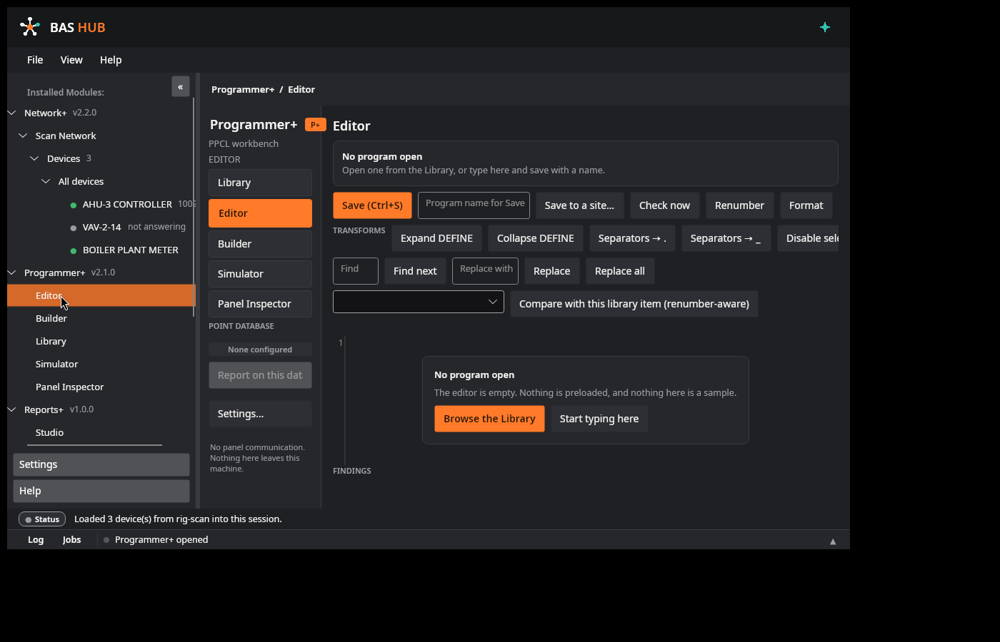
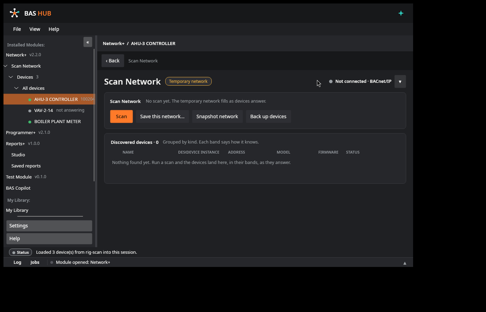
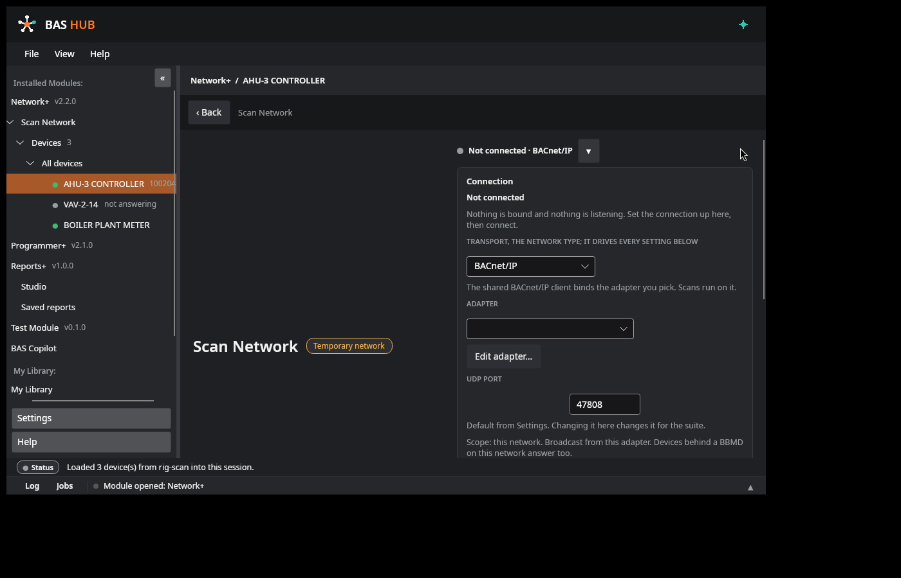
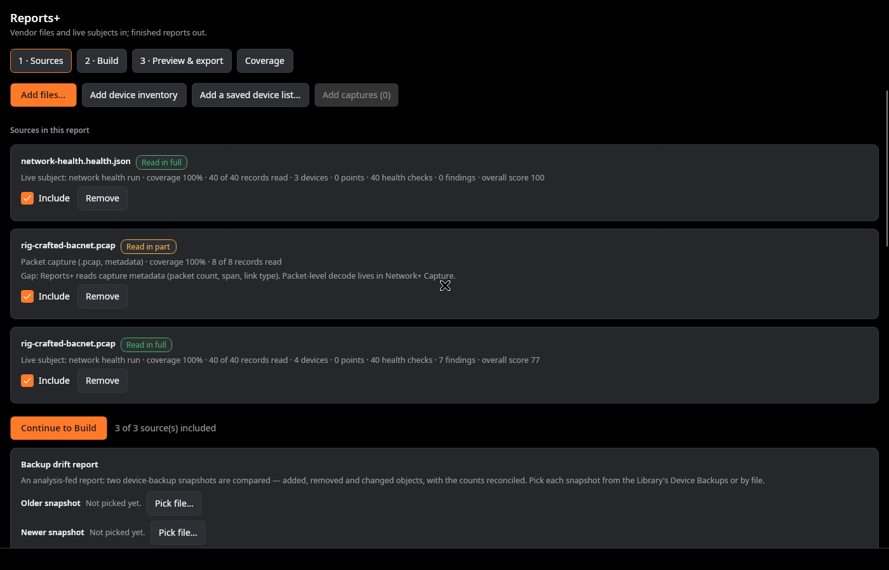
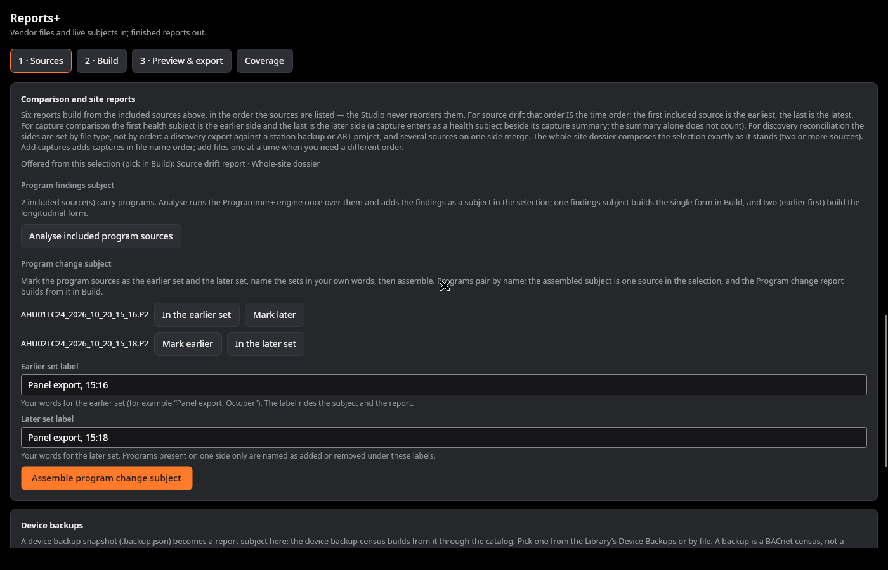

The Hub
The home screen and launcher. The digest: module readiness in plain words, your own categories of shortcuts to the tools you already use, one settings home.
See the home screen →Desktop suite (building-automation controls) Build 0.9.5
One app for controls field work.
A desktop suite for building-automation controls work. Instead of separate tools (one for programming, one for discovery, one for captures, one for the terminal, a spreadsheet for the records) BAS Hub is one app whose modules share one device inventory and one backup system.
Programmer+ · Network+ · Reports+ · BAS Copilot (optional)

The current build, as it opens. The digest panel: the mark and version on the left, module readiness on the right; your own categories and shortcuts below. This is the shipping build's home screen, captured on its test rig.
02 · Who it's for
Controls technicians and engineers who commission, service, and troubleshoot building automation systems: BACnet networks that misbehave, PPCL programs that need writing or fixing, devices that need proving before you leave the site. BAS Hub's screens start from the job you came to do, not from the protocol underneath it.
| The job | The usual sprawl | In BAS Hub |
|---|---|---|
| Keep track of devices | Every tool keeps its own list, or a spreadsheet does | One inventory every module shares; find a device once, use it everywhere |
| Write and check a PPCL program | An editor here, a separate checker there, files passed by hand | Editor, checks, builder, simulator, and debugger in one workbench |
| Change something on a live controller | Command it and rely on your own ritual for safety | Preview → backup → confirm → verify → rollback, the same path every time |
| Read a packet capture | Raw hex and a protocol reference open beside it | Plain sentences first, full decode underneath |
| Know whether the network is healthy | Gut feel and spot checks | A 40-check catalog whose score always shows its findings |
| Turn the work into a report | A document assembled by hand: screenshots, re-typed numbers, a spreadsheet’s totals | Reports+: 60 report subjects in one studio, fed by your files or handed over from Network+ and Programmer+; PDF, XLSX, CSV, TXT out |
| Get a second pair of eyes | A cloud chatbot, and your site data on someone else's server | BAS Copilot: optional, on-device, or not installed at all |
03 · Modules
A device you find in Network+ is the same record everywhere. A write to a live controller goes through the same safety path every time. And the work itself — the files, the runs, the evidence — becomes finished reports in Reports+. Your data lives on your laptop, in the Library’s real folders, and nothing leaves it unless you send it.
The home screen and launcher. The digest: module readiness in plain words, your own categories of shortcuts to the tools you already use, one settings home.
See the home screen →The PPCL workbench: editor, block builder, simulator and debugger, point database, and code library.
Explore Programmer+ →The network workbench: find devices, look at them, watch traffic, check health, prove changes, talk, and keep records.
Explore Network+ →The reporting studio: 60 report subjects, built, previewed, edited, and exported in one place — fed by vendor files, and by live subjects handed over from Network+ and Programmer+. Audiences and redaction per build; configurations saved as definitions.
Explore Reports+ →An assistant that runs entirely on your computer. If you don't install it, there is no chat surface anywhere in BAS Hub.
How Copilot works →04 · On stage
Scroll, and the stage changes hands: the home screen, the programming workbench, the network workbench, the reporting studio, and the optional assistant, each with the facts that define it. (With reduced motion set, the stage unpins and every module simply follows its text.)
One launcher for the suite. The digest panel states, module by module, what is installed, what is ready, and what needs attention, in plain words; below it, your own categories hold shortcuts to the external tools you already use.
 The home screen, the digest: readiness at the right; your categories below.
The home screen, the digest: readiness at the right; your categories below.The PPCL workbench: an editor that checks as you type, a block builder and decision tables that compile to program text, and a simulator and debugger for proving logic before a panel ever sees it.
 The PPCL editor: checks as you type.
The PPCL editor: checks as you type.The network workbench, opened on jobs in plain language. One page per device is the spine; protocols are capabilities of the device, never separate rooms to visit.
 The device page, one device, one page.
The device page, one device, one page.The reporting studio. Vendor files and live subjects in; finished reports out — built, previewed, edited, and exported in one place, from one catalog the studio and its coverage page both read, so they cannot drift apart.

Reports+ Build: the catalog, by subject.An assistant that runs entirely on your computer: chosen at install, sized to your hardware, and absent without a trace if you skip it. It explains and drafts; it never acts.
 BAS Copilot: runs on this computer, or not at all.
BAS Copilot: runs on this computer, or not at all.05 · Screenshots
Real captures of the 0.9.4 build and its test rigs, no mockups, no staged data presented as a real site. Select any screenshot to view it full-size.
The device page (rig capture), Properties first: identity, state, and network facts for one device, with fictional seed data.
 Contextual Help (rig capture): Help opens at the topic for the screen you are on, stamped to this build.
Contextual Help (rig capture): Help opens at the topic for the screen you are on, stamped to this build.
 Watch: a capture read back in plain sentences. (Demonstration capture file; live capture uses the optional Npcap step at install.)
Watch: a capture read back in plain sentences. (Demonstration capture file; live capture uses the optional Npcap step at install.)
 Console, a real VT terminal, your usual commands one tap away, session logs filed to Records.
Console, a real VT terminal, your usual commands one tap away, session logs filed to Records.
 Settings (rig capture): one Settings home for the suite and its modules, as shipped in 0.9.4.
Settings (rig capture): one Settings home for the suite and its modules, as shipped in 0.9.4.

Programmer+ (rig capture): the Editor as it opens, no program loaded until you open one.
Scan Network (rig capture): one page, a temporary network for this session, devices in their kind bands. Fictional seed data.
The connection control (rig capture): one pill, three honest states; editable only while not connected.
Reports+ Sources: every source read on the spot, its verdict and coverage on its card. Reports+ Build: the catalog by subject; a report the sources cannot feed says what it needs.
Comparison panel: order is time; the findings and program-change subjects are assembled here, in the open. In motion, home → Network+ → Health → Programmer+, live on the test rig.
In motion, home → Network+ → Health → Programmer+, live on the test rig.
06 · Trust, by design
Nothing is sent anywhere automatically, including crash reports. If BAS Hub ever crashes, it saves a structured report on your computer (the last 10 are kept, secrets kept out), and the next launch tells you in plain language that one was saved. Sending it anywhere is your act, never the app's.
One standard per-user folder; it survives updates and uninstalls; exports never contain credentials.
Credentials are kept in Windows Credential Manager / DPAPI, never in plain-text files. Console passwords are held in session memory only and are never stored at all; console profiles by design have no password field.
The Test Bench is the only door that writes. Preview from real reads → backup persisted first → your confirm → graded writes with read-back verify → a receipt, and rollback through the same path. A failed backup read stops the run cold: nothing is written. Browsing surfaces hold no write code path at all.
Release manifests are digitally signed and payloads are checksummed; a download that doesn't verify is refused, not installed. The installer itself verifies the payload hash before it stages a single file.
Per-user install, no administrator rights for the app, no background services installed, no listening sockets opened by default. Anything that listens runs only while you run it, shows its state, and stops when you stop it.
07 · License
BAS Hub is proprietary software. © 2026. All rights reserved. Downloads are binaries only: no source code is published. Your use of the software is governed by the proprietary terms stated in the download.